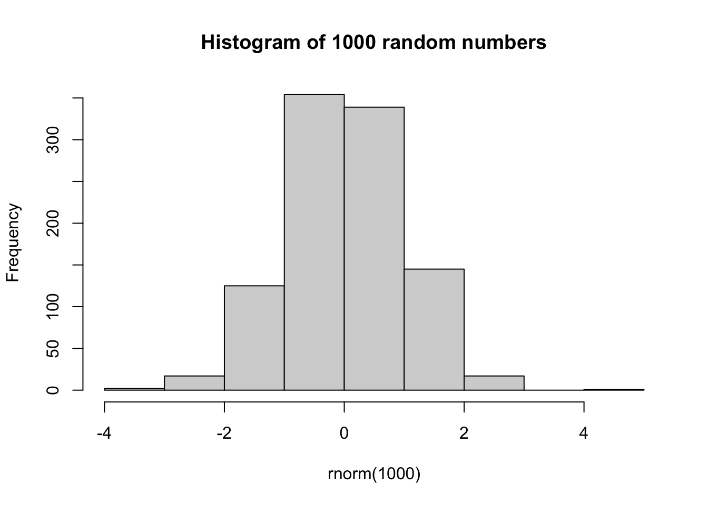

Chapter 3 Get to know RStudio interface
RStudio is an integrated development environment (IDE) for R.
3.1 RStudio Windows/Panels
Upon openning RStudio, you may see three windows or panels. However, it can be extended to four with the source panel opened (File > New File > R Script). You can reorder the windows / panels as your wish.
3.1.1 Source window
The source panel is where you create and edit your collection of codes in i.e. R Scripts. This is your script editor. You can save it in “.R” extension and reuse your codes later (even in the case of sudden crush of your computer). As you type in your codes, make a habit of saving the codes (command + S for Mac OS or Ctrl + S for Windows OS) as you do with most of the text editors. However, you have to run the codes through the Console (coming next in the discussion). You can run the whole page of codes or a snippet of code(s) from the source panel.
There are few ways to run your codes from the Source panel through the Console. This could be with copy your codes and then paste on the Console and then hit enter. Or, selectitng the code snippet that you wish to execute and clicking on the “Run” button on the top of the Source window. Alternatively, you can use the short-cut “Command + Enter” on Mac, or “Ctrl + Enter” on Windows OS.
3.1.2 Environment / History (Connections / Build / Git etc)
This panel contains several tabs and the number depends on whether you have installed/ loaded one or few packages. I will touch on only the Environment and the History tabs.
The Environment tab of this panel shows you all the data objects (like vectors, dataframes etc) that you’ve created during the current R session . You can even double click on a loaded dataset on Environment tab and view in the Source panel, however, I won’t recommend this if the dataset is relatively sizable. The little broom on the top resets your environment and deletes the variables or data.
The History tab keeps the commands that you used and can be reused by double click to execute, or shift + double click moves to the Source editor (R Script).
3.1.3 Console
One can treat the Console Panel as the heart of RStudio. This is the default window in Base-R. You actually executes your R commands here. The Console works as a prompt like a terminal in UNIX OS and let you check your codes interactively. However, don’t be confused by this analogy as there is a dedicated Terminal tab alongside the Console tab in this window/panel. Keep in mind that, when you turn off the RStudio, the Console deletes all the codes that you have executed in the current R session and when you reopen it, you start with a fresh Console.
3.1.4 Files / Plots / Packages / Help
I will go through these four tabs in this panel. However, sometimes you may have an aditional tab called Viewer.
- Files -
Filestab showes you where you are and what are the contents of the directory, which is equivalent to folder in Windows OS. You can also see the path of the project directory on the top. Let’s set your current directory -
setwd("/Users/mahedi/Documents/Collaborations/UCL_CI/Introduction-to-R-for-Biologists")- Plots - This tab shows the plots that you generate. One cool and handy feature of RStudio is to have it integrated. You can go back and forth between plots using left and right arrow keys. Small broom resets your plots panel and deletes from the memory. You can either copy your plot to the clipboard or export as .jpeg or .pdf file.
hist(rnorm(1000), main = "Histogram of 1000 random numbers")
Packages - R packages are bundles of functions generated by R users and released for others to use for free. Sometimes light weight data are embedded within. This list contains all the packages that are downloaded in this computer (or have come as base packages with R). The loaded packages are the ones with tick marks (checked). FYI, there are more than 19000 packages in CRAN (The Comprehensive R Archive Network), more than 2000 packages in Bioconductor. Packages can be installed/ loaded in R environment in a number of ways, we will do it in the so-called conventional way. The function to install a package from the CRAN repository is
install.packages("package_name"). From Bioconductor, installing package is a bit different, we will cover that part some other day. However, this will not load the package in to the R environment yet, rather you may think it has been downloaded on your computer. Now to load it to your current R session, type inlibrary(package_name). Remember, this time the single/double quotation around the package_name is not necessary.Help -
Helptab provides the information regarding functions - detailed descriptions, usage, arguments etc. This utility can be summoned using the search box or by typing?function_namein theConsole.